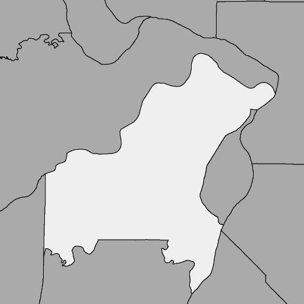
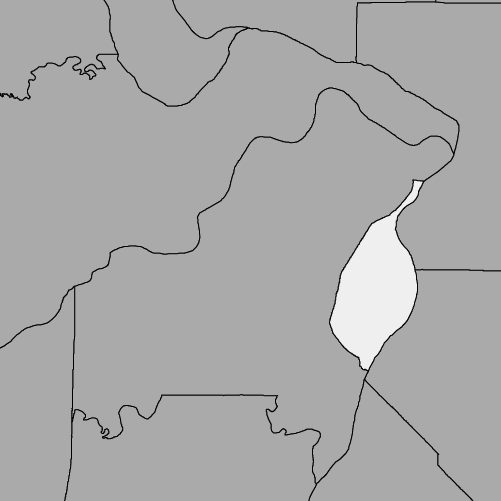

St. Louis has about one third the population of St. Louis County, and far fewer police and fire departments. The city and the county are nearly on par with school districts — if you count charter schools as individual districts.
|
Type
|
St. Louis County
|
St. Louis
|
|---|---|---|
| Map |  |  |
| Population | 998,581 |
311,404 |
| Places | 99 Affton • Ballwin • Bel-Nor • Bel-Ridge • Bella Villa • Bellefontaine Neighbors • Bellerive • Berkeley • Beverly Hills • Black Jack • Breckenridge Hills • Brentwood • Bridgeton • Calverton Park • Castle Point • Champ • Charlack • Chesterfield • Clarkson Valley • Clayton • Concord • Cool Valley • Country Club Hills • Country Life Acres • Crestwood • Creve Coeur • Crystal Lake Park • Dellwood • Des Peres • Edmundson • Ellisville • Eureka • Fenton • Ferguson • Flordell Hills • Florissant • Frontenac • Glasgow Village • Glen Echo Park • Glendale • Grantwood Village • Green Park • Greendale • Hanley Hills • Hazelwood • Hillsdale • Huntleigh • Jennings • Kinloch • Kirkwood • Ladue • Lakeshire • Lemay • Mackenzie • Manchester • Maplewood • Marlborough • Maryland Heights • Mehlville • Moline Acres • Normandy • Northwoods • Norwood Court • Oakland • Oakville • Old Jamestown • Olivette • Overland • Pagedale • Pasadena Hills • Pasadena Park • Pine Lawn • Richmond Heights • Riverview • Rock Hill • Sappington • Shrewsbury • Spanish Lake • St. Ann • St. John • Sunset Hills • Sycamore Hills • Town and Country • Twin Oaks • University City • Uplands Park • Valley Park • Velda City • Velda Village Hills • Vinita Park • Vinita Terrace • Warson Woods • Webster Groves • Wellston • Westwood • Wilbur Park • Wildwood • Winchester • Woodson Terrace |
1 St. Louis |
| Police Departments | 72 Ballwin Police Dept. • Bella Villa Police Dept. • Bellefontaine Neighbors Police Dept. • Berkeley Police Dept. • Beverly Hills Police Dept. • Breckenridge Hills Police Dept. • Brentwood Police Dept. • Bridgeton Police Dept. • Calverton Park Police Dept. • Charlack Police Dept. • Chesterfield Police Dept. • Clarkson Valley Police Dept. • Clayton Police Dept. • Cool Valley Police Dept. • Country Club Hills Police Dept. • Crestwood Police Dept. • Creve Coeur Police Dept. • Dellwood Police Dept. • Des Peres Police Dept. • Edmundson Police Dept. • Ellisville Police Dept. • Eureka Police Dept. • Ferguson Police Dept. • Flordell Hills Police Dept. • Florissant Police Dept. • Florissant Valley Community College • Frontenac Police Dept. • Glen Echo Park Police Dept. • Hazelwood Police Dept. • Hillsdale Police Dept. • Jennings Police Dept. • Kinloch Police Dept. • Kirkwood Police Dept. • Ladue Police Dept. • Lakeshire Police Dept. • Manchester Police Dept. • Maplewood Police Dept. • Maryland Heights Police Dept. • Maryville Dept. of Public Safety • Meramec College Police Dept. • Moline Acres Police Dept. • Normandy Police Dept. • Northwoods Police Dept. • Oakland Police Dept. • Olivette Police Dept. • Overland Police Dept. • Pagedale Police Dept. • Pasadena Park Police Dept. • Pine Lawn Police Dept. • Richmond Heights Police Dept. • Riverview Police Dept. • Rock Hill Police Dept. • Shrewsbury Police Dept. • St. Ann Police Dept. • St. John Police Dept. • St. Louis County Police Dept. • Sunset Hills Police Dept. • Sycamore Hills Police Dept. • Town and Country Police Dept. • University City Police Dept. • University of Missouri-St. Louis Police Dept. • Uplands Park Police Dept. • Velda City Police Dept. • Vinita Park Police Dept. • Vinita Terrace Police Dept. • Warson Woods Police Dept. • Washington University Police Dept. • Webster Groves Police Dept. • Wellston Police Dept. • Westwood Police Dept. • Winchester Police Dept. • Woodson Terrace Police Dept. |
4 St. Louis Metropolitan Police Dept. • St. Louis Park Rangers • Lambert Airport Police Dept. • St. Louis Community College at Forest Park |
| Fire Departments | 43 Fire Protection DistrictsAffton • Black Jack • Community • Creve Coeur • Eureka • Fenton • Florissant Valley • Kinloch • Lemay • Maryland Heights • Mehlville • Metro West • Mid-County • Metro North • Monarch • Northeast • Pattonville • Riverview • Robertson • Spanish Lake • Valley Park • West County EMS • West OverlandMunicipal Fire DepartmentsBerkeley • Brentwood • Clayton • Crestwood • Des Peres • Ferguson • Frontenac • Glendale • Hazelwood • Jennings • Kirkwood • Ladue • Maplewood • Olivette • Pacific • Richmond Heights • Rock Hill • Shrewsbury • University City • Webster Groves |
1 St. Louis Fire Dept. |
| School Districts | 23 Affton 101 School District • Bayless School District • Brentwood School District • Clayton School District • Ferguson-Florissant R-II School District • Hancock Place School District • Hazelwood School District • Jennings School District • Kirkwood R-VII School District • Ladue School District • Lindbergh School District • Maplewood-Richmond Heights School District • Mehlville R-IX School District • Meramec Valley R-III School District • Normandy School District • Parkway C-2 School District • Pattonville R-III School District • Ritenour School District • Riverview Gardens School District • Rockwood R-VI School District • University City School District • Valley Park School District • Webster Groves School District |
18 St. Louis Public SchoolsCharterCarondelet Leadership Academy • City Garden Montessori • Confluence Charter Schools • Eagle College Preparatory Endeavor • Gateway Science Academy • Grand Center Arts Academy • Hawthorn Leadership School for Girls • KIPP St. Louis Public Schools • La Salle • Lafayette Preparatory Academy • Lift for Life Academy • North Side Community School • Preclarus Mastery Academy • Premier Charter School • Saint Louis Language Immersion School • St. Louis College Prep • The Biome |
“Places” includes municipalities and “Census Designated Places”.